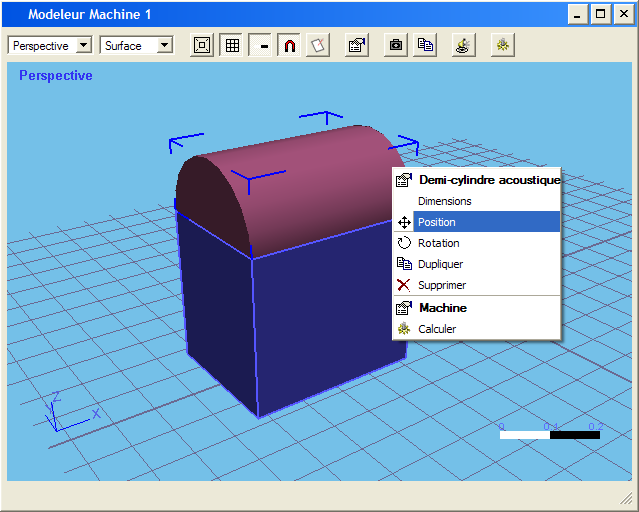

Table des matières

Comme son nom l'indique, ce modeleur permet de créer ou de modifier des machines.
Une machine peut être constituée de plusieurs éléments de base :
A chacun de ses éléments correspond un outils de la barre d'outils Machine.